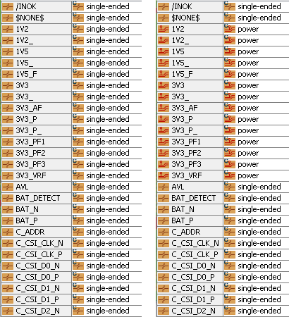

Modify PCB nets¶
There are different attributes of a PCB that can be modified. These modifications are done on the instance of the PCB object. This means that the changes will not automatically appear in a project if the PCB was imported before the changes were made.
Please prepare:
import cst.interface
from cst.eda import pcb_api
from pathlib import Path
import tempfile
data_dir = Path(cst.interface.install_paths.root()) / "Online Help" / "PythonTutorial" / "data"
de = cst.interface.DesignEnvironment.connect_to_any_or_new()
project_dir = Path(tempfile.mkdtemp())
print(f"Working in temporary directory: {project_dir}")
pcb_file = data_dir / 'cst_phone.tgz'
# Create an instance of a PCB
pcb = pcb_api.PCB.convert_from(pcb_file)
# create a new PCBS project
prj = de.new_pcbs()
# import the pcb to the project
prj.pcbs.set_pcb(pcb)
# Regular expression to match "1V", "3V", "3V3", ...
import re
pattern = re.compile(r"\d+V")
# Iterate through all nets of the pcb and find matches in their names
for net in pcb.nets:
if pattern.match(net.name):
net.net_type = pcb_api.NetType.Power
# create a new PCBS project
prj2 = de.new_pcbs()
# import the pcb to the project
prj2.pcbs.set_pcb(pcb)
In the code above, we initiate a PCB instance as described before and load it into a project.
Then we modify the net type of all nets, that start with pattern “number + ‘V’” to “NetType.Power”.
This is done by iterating through pcb.nets and using regular expressions.
After the modification, we create a new project and load the PCB into it.
The image below shows the nets of both projects after running the code shown above.
On the left side we can see a few nets of the first project and on the right a few nets of the second project.

As the PCB was imported to the first project before the PCB was modified, the modifications are not present in this project. We can see that all the nets that fit the pattern have the net type “power” in the right image.